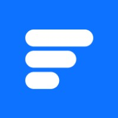
FingularNeoBank-суперапп для Малайзии: кредит, BNPL и кошелёк в одной архитектуре. MVP 1.0 в разработке за 3 месяца. 3 итерации с локальными пользователями · единственный дизайнер
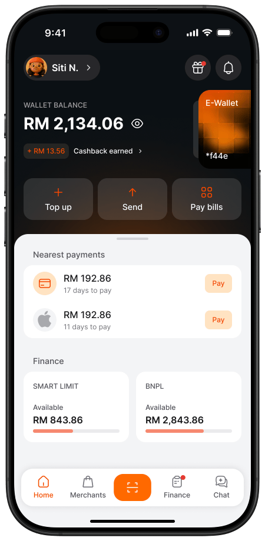
Fingular
Спроектировал NeoBank-суперапп для Малайзии — кредит, BNPL и кошелёк в одной архитектуре. MVP 1.0 в разработке за 3 месяца.
Результаты
Контекст компании
Fingular — финтех-стартап на малайзийском рынке. На старте у компании было два независимых продукта: кредитная линия Tambadana (основной источник дохода) и BNPL-сервис AhaPay. Целевая аудитория — местные пользователи с ограниченным доступом к классическим банкам. Проект финансировался как стартап с жёстким сроком 3 месяца на требования и дизайн до передачи в разработку.
Задача
Объединить кредит, BNPL и кошелёк в одно приложение так, чтобы пользователи перестали воспринимать функции как разные инструменты.
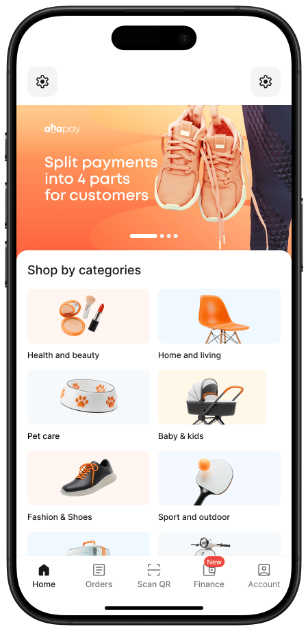
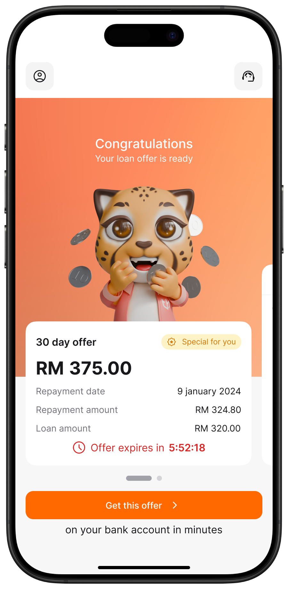
Гипотеза
Если задать архитектуру суперапп с приоритетом кредитной линии и добавить слой кошелька, ментальная модель пользователей сойдётся с продуктом и активность по связанным сценариям вырастет.
Исследование и тестирование
Протестировал 3 концепции главного экрана с малайзийскими пользователями. Итерация 1 — пользователи путали кредит и кошелёк (отклонено). Итерация 2 — развёл финансовые и долговые действия, но иерархия сценариев осталась размытой (отклонено). Итерация 3 — кошелёк стал хабом, ментальная модель сошлась.
Дизайн-систему расширял по ходу — упрощал там, где сроки не давали довести до идеала, и фиксировал технический долг отдельно.
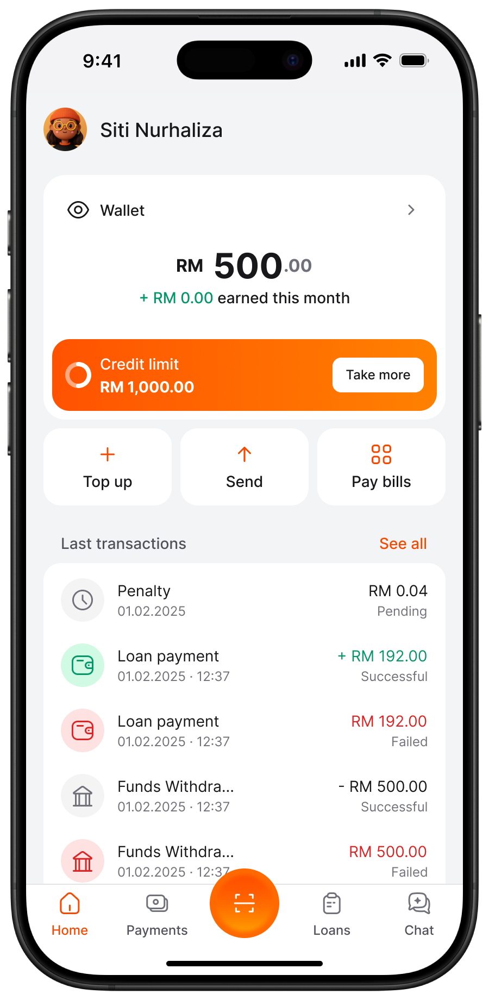
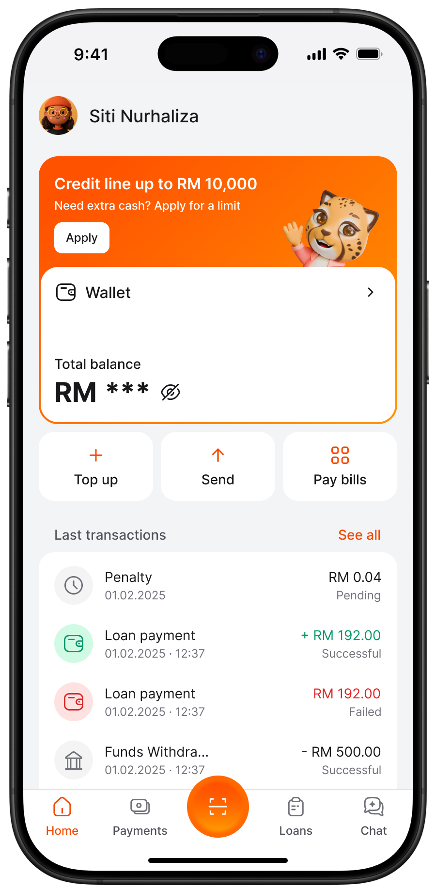
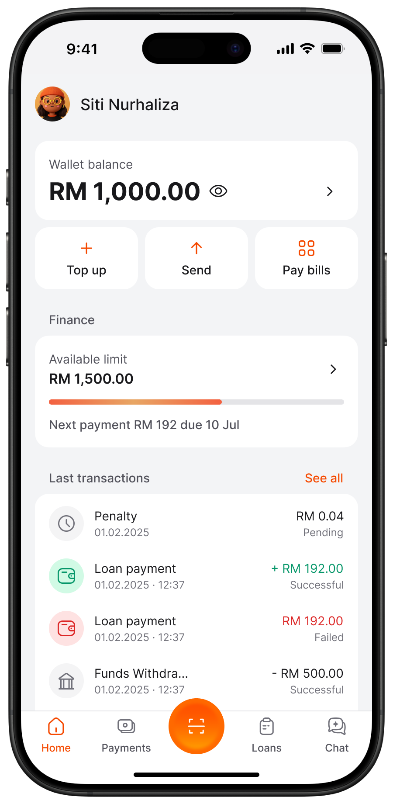
Эволюция MVP — от основного дохода к финансовой экосистеме
Продукт запускали поэтапно в условиях жёстких ограничений по времени и ресурсам.
MVP 1.0. Сконцентрировался на основном источнике дохода — кредитной линии: онбординг и KYC, подписание кредитного договора, погашение долга. Приоритетами были ясность, снижение трения и оптимизация сценариев, ориентированных на выручку.
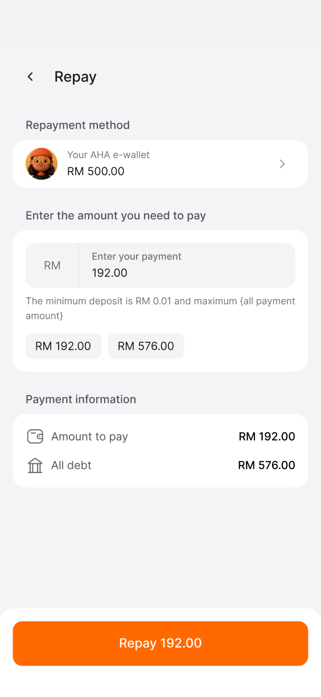
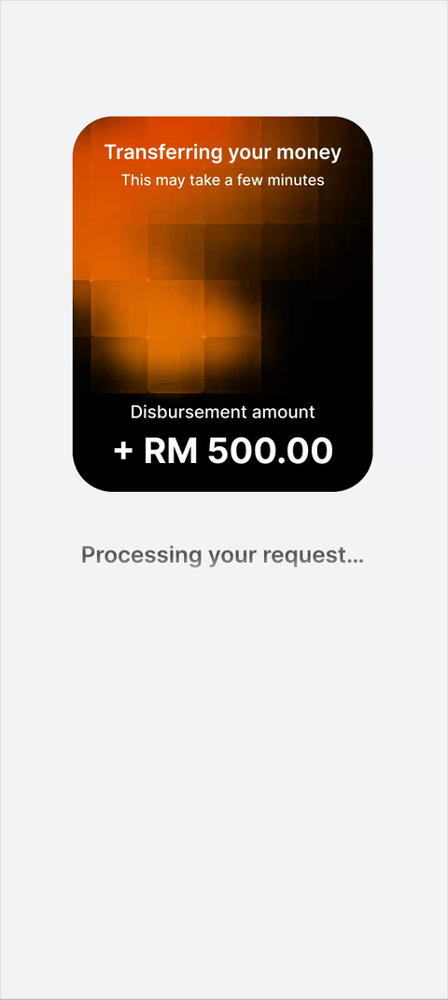
MVP 2.0 — инфраструктура кошелька
Параллельно с разработкой первого MVP спроектировал MVP 2.0 — инфраструктуру кошелька: оплату счетов, переводы DuitNow, пополнения и настройки. Сейчас сценарий тестируется на интерактивном прототипе с реальными пользователями.
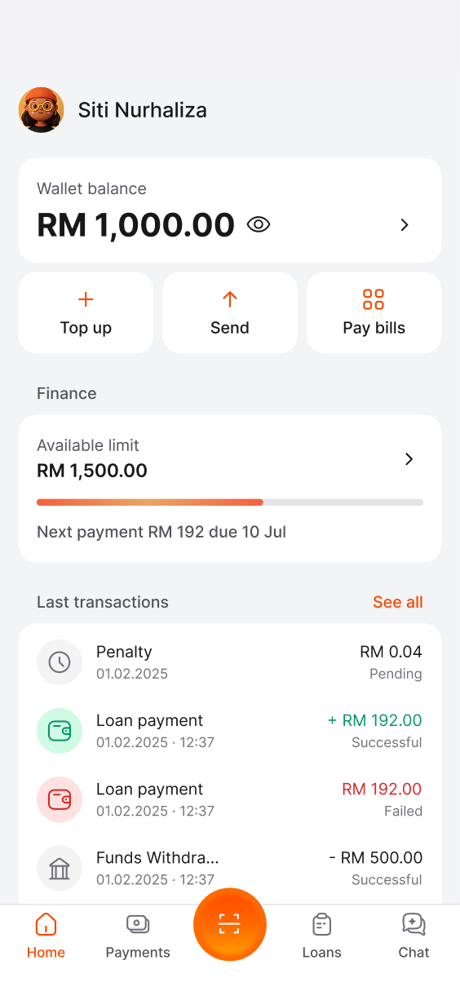
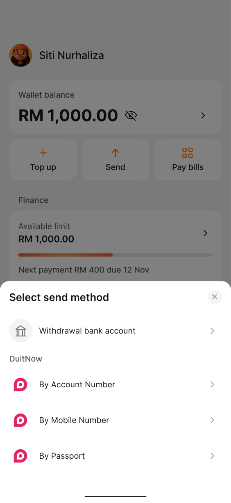
MVP 3.0 — единое супер-приложение
Концепция MVP 3.0 объединила кошелёк, кредитную линию и BNPL в масштабируемую архитектуру супер-приложения с согласованной логикой главного экрана.
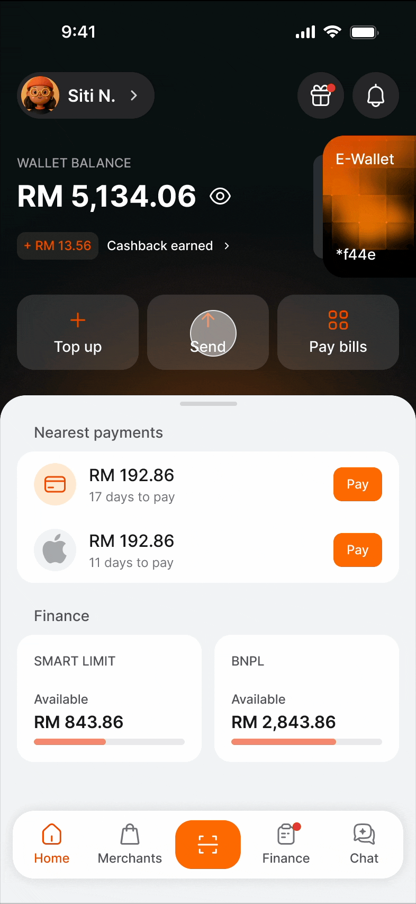
Эволюция дизайн-системы
Дизайн-система уже существовала — на ней были построены Tambadana и AhaPay, — но требовала доработки под единый нео-банк. Расширил библиотеку компонентов, улучшил интерфейс и заложил правила масштабирования при росте продукта.
Кросс-функциональная работа
Параллельные дизайн-треки MVP 1/2/3 не блокировали инженерию: сначала отдавал в разработку погашение и подписание кредита, параллельно проектировал кошелёк и архитектуру суперапп. С продактами — приоритизация по выручке, с разработкой — фиксация архитектуры до handoff, с локальными пользователями — валидация ментальной модели.
Итоги
- MVP 1.0 (кредитная линия) — в разработке за 3 месяца.
- MVP 2.0 (кошелёк) — на тестировании на интерактивном прототипе с реальными пользователями.
- MVP 3.0 (суперапп) — единая архитектура главного экрана зафиксирована.
- Дизайн-система расширена под мультипродуктовое расширение.
Эффект и ожидаемые метрики
Запуск NeoBank на малайзийском рынке — в ближайшие месяцы. Целевые метрики, которые будем мерить после запуска: конверсия «заявка → выдача кредита», удержание (D7/D30), доля пользователей, использующих более одного продукта (cross-product activation).